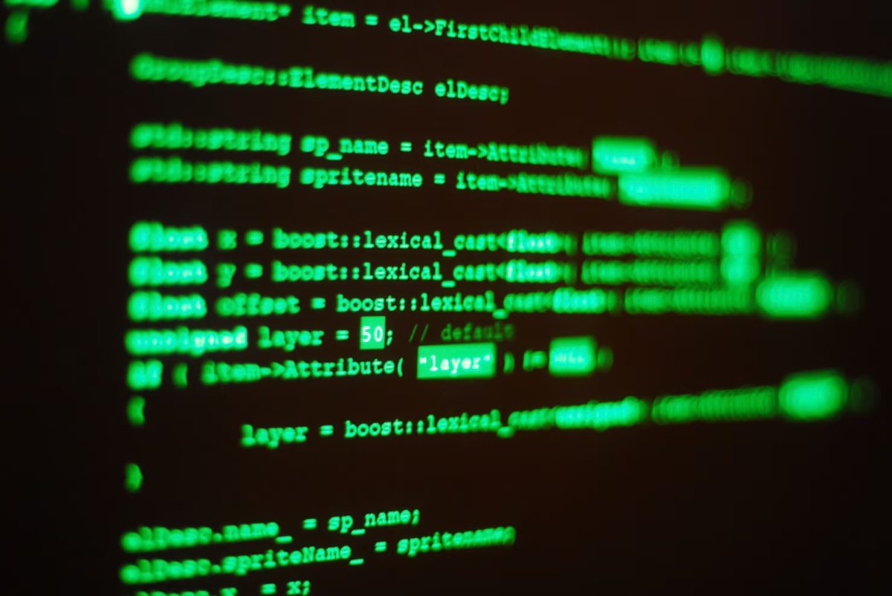

<!-- HTML (HyperText Markup Language) — ეს არის ჰიპერტექსტური მარკირების ენა, რომელიც გამოიყენება ვებ-გვერდების სტრუქტურის 
 და შინაარსის განსაზღვრისთვის. HTML-ის მეშვეობით ვქმნით ტექსტებს, სურათებს, ბმულებს, სიებს, ცხრილებს
  და სხვა ელემენტებს ვებ-გვერდზე. ის წარმოადგენს ვებპროგრამირების საფუძველს 
  და ყველა ვებ-გვერდი HTML-ის გამოყენებით არის აგებული.-->

<p>გამარჯობა</p>
<p>მე ვარ ნინი</p>
<p>და მე ვსწავლობ პროგრამირებას</p>
<P>გიყვართ თქვენ პროგრამირება?</P>
<BUtton>მიყვარსა</BUtton>
<BUtton>ვერვიტან</BUtton>
<BUtton>საინტერესოა</BUtton>

